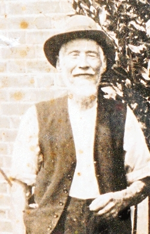
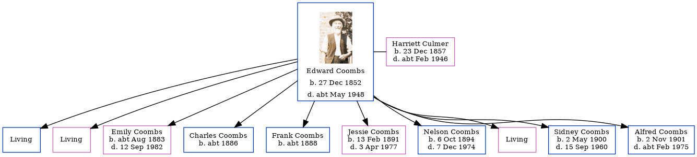

Edward Coombs 1852 - c1948
[ Home ] | [ Calendar ] | [ Surnames Index ] | [ Errors ] | [ Family History ]Edward Coombs, the husband of Harriett Culmer (the first cousin three-times-removed on the mother's side of Nigel Horne), was born in Whitstable, Kent, England on 27 Dec 18521,2,3,4 and married Harriett (with whom he had 10 children: George Edward, Alice Ann, Emily Harriett, Charles F, Frank, Jessie May, Nelson Victor, Harriett, Sidney John and Alfred William Constable, along with 3 surviving children) in Faversham, Kent, England around Aug 18755.
During his life, he was living at Waterham Road, Hernhill, Kent on 5 Apr 18917; at Red Lion Inn, Hernhill, Kent on 31 Mar 19011; on Crockham Lane, Hernhill, Kent on 2 Apr 19116; and at 5 Manor Cottages, Swale, Kent on 29 Sept 19392.
He died c. May 1948 in Sittingbourne, Kent, England4.
Children
- Emily Harriett was born c. Aug 1883
- Charles F was born c. 1886
- Frank was born c. 1888
- Jessie May was born on 13 Feb 1891
- Nelson Victor was born on 6 Oct 1894
- Sidney John was born on 2 May 1900
- Alfred William Constable was born on 2 Nov 1901
Citations
- 1901 England, Wales & Scotland Census - Findmypast (was age 50 and the head of the household)
- 1939 Register - Findmypast (was the head of the household)
- England & Wales births 1837-2006 - Findmypast
- England & Wales deaths 1837-2007 - Findmypast
- England & Wales marriages 1837-2008 - Findmypast
- 1911 Census for England & Wales - Findmypast (was age 60 and the head of the household)
- 1891 England, Wales & Scotland Census - Findmypast (was age 38 and the head of the household)
Notes
He became blind at some point, however he coped very well with his loss of sight and led a full life.
Media
Edward Coombs 1947

1939 Register Transcription - TNA-R39-1851-1851C-002-20
1911 Census for England & Wales - GBC/1911/RG14/04382/0003/1
1891 England, Wales & Scotland Census - GBC/1891/0005777444
England & Wales births 1837-2006 - BMD/B/1853/1/AH/000797/019
1939 Register - TNA/R39/1851/1851C/002/19
England & Wales marriages 1837-2005 - BMD/M/1875/3/AZ/000057/366
England & Wales Deaths 1837-2007 - BMD-D-1948-2-AZ-000168-127
Family Tree
Map
Generated by ged2site. Last updated on Jul 3, 2024
Known Issues
No records of living with anyone